Tsuruga, Fukui: things to do, food and stays
Tsuruga · Fukui
Tsuruga
Highlighted on the Fukui map.

Stay
天然温泉 若狭の湯 ドーミーイン敦賀
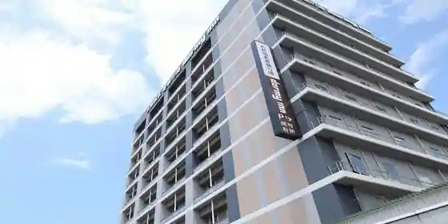
Tennen Onsen Wakasa No Yu Dormy Inn Tsuruga
Inn in Hon, Tsuruga with a sauna and a large communal bath.
ホテルグランビナリオTSURUGA
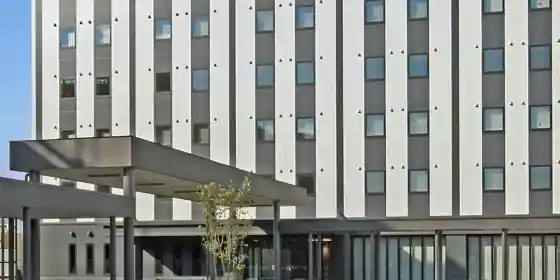
Hotel Guranbinario TSURUGA
敦賀マンテンホテル駅前（マンテンホテルグループ）
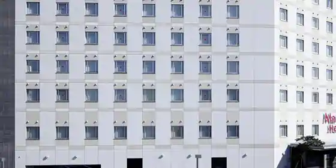
Tsuruga Manten Hotel Ekimae (Manten Hotel Gurupu)
Hotel in Kunihiro, Tsuruga with a large communal bath; 1-minute walk from Jrtsuruga Station.
ホテルルートイン敦賀駅前
Hotel Route Inn Tsuruga Ekimae
Hotel in Tetsurin, Tsuruga with buffet meals and breakfast available.
ビジネス竹野旅館
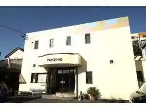
Business Takeno Ryokan
Ryokan inn in Chuo, Tsuruga with business travelers.
ホテル・アルファ－ワン敦賀
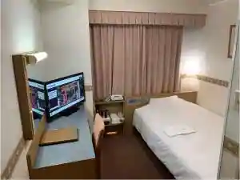
Hotel Arufa - Wan Tsuruga
Hotel in Chuo, Tsuruga; 5-minute drive from Jrtsuruga Station.
ビジネス旅館まつや
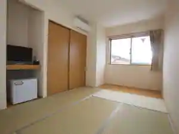
Business Ryokan Matsuya
Ryokan inn in Chuo, Tsuruga with parking and business travelers.
ビジネスホテルシュトローム
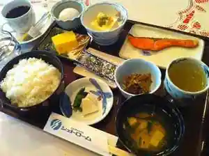
Business Hotel Shutoromu
Hotel in Showa, Tsuruga with business travelers.
ニューサンピア敦賀
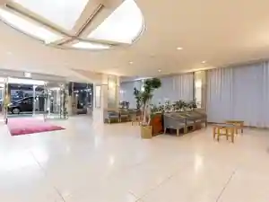
Nyusanpia Tsuruga
ホテルセレクトイン敦賀
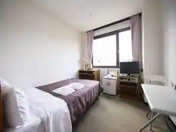
Hotel Serekutoin Tsuruga
Hotel in Nogami, Tsuruga with parking; 9-minute drive from Tsuruga IC.
FUJIONE HOSTEL
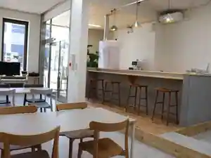
FUJIONE HOSTEL
ビジネスホテル クォーレ
Business Hotel Kuore
Hotel in Furutakari, Tsuruga with a sauna and business travelers.
Dining
弥助寿司本舗
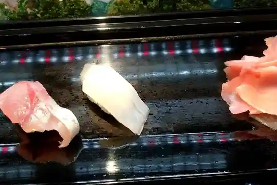
Yasuke Sushi Honpo
うお吟
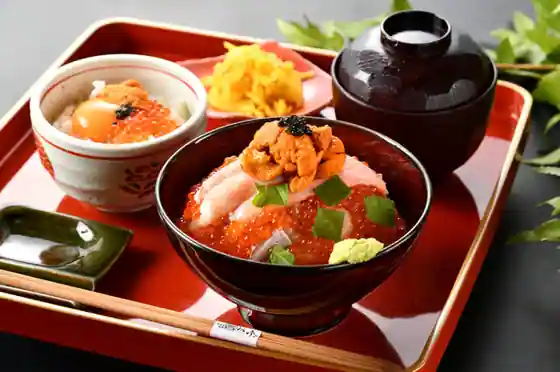
Uo Gin
創作居酒屋てんてん
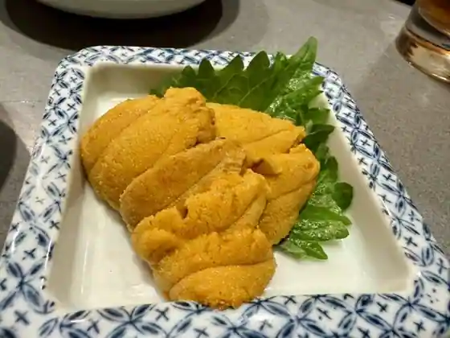
Sosaku Izakaya Tenten
一本槍
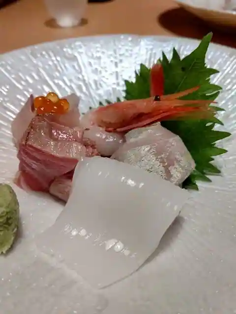
Ipponyari
中華そば 一力
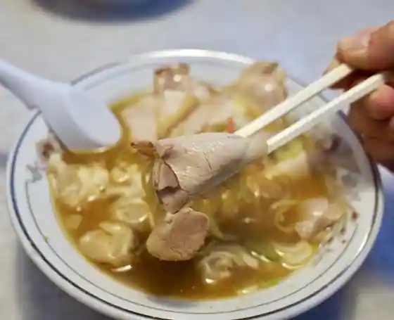
Chuka Soba Ichiriki
寿し 丸勘
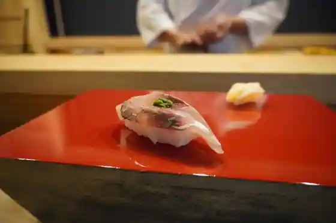
Hisashi Shi Maru Kan
千束そば
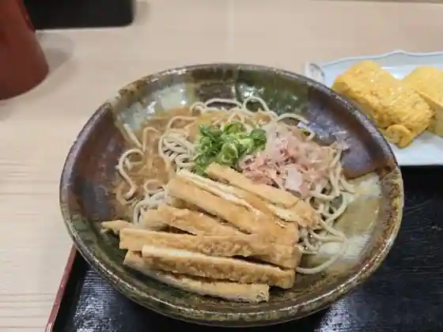
Senzoku Soba
御食事処 なかや
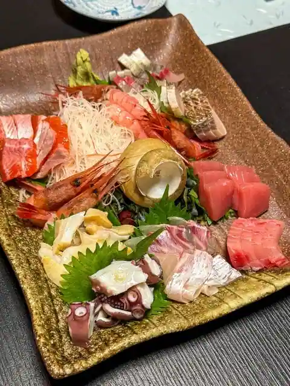
Mike Koto Tokoro Nakaya
海鮮仕事人 あいろん侍
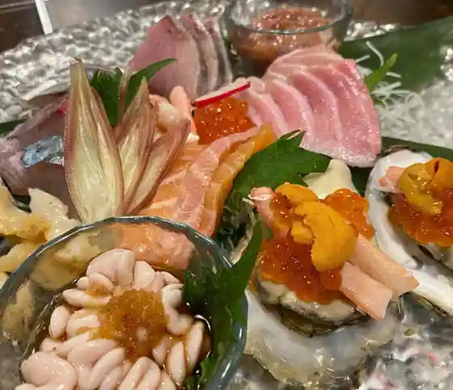
Kaisen Shigotonin Airon Samurai
はまやき安兵衛
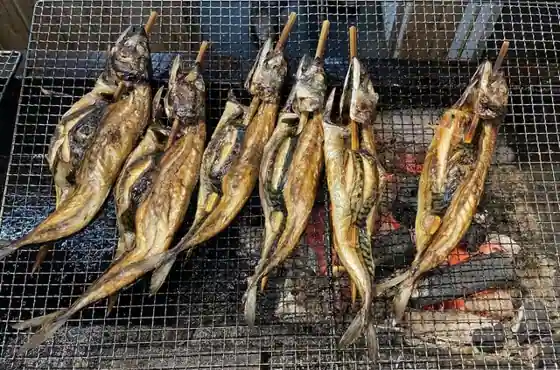
Hamayaki Yasube
まるさん屋 敦賀駅前
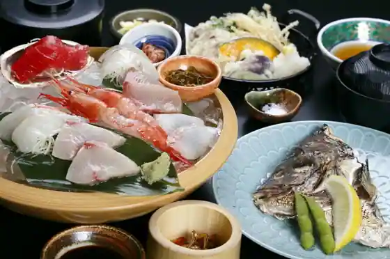
Marusan Ya Tsuruga Ekimae
どんと屋
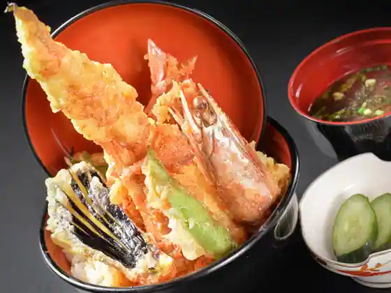
Donto Ya
すずや
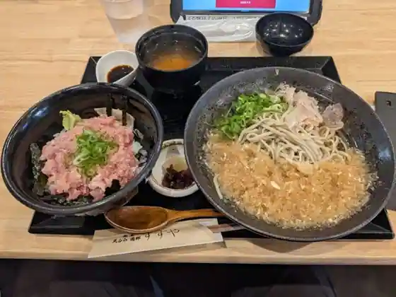
Suzuya
中道源蔵茶舗
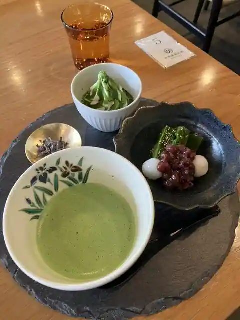
Chudo Genzo Chaho
食事処 建
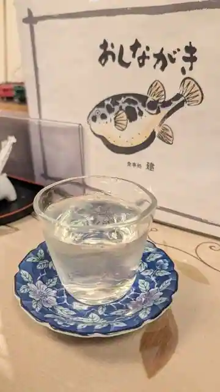
Shokuji Tokoro Ken
中道源蔵茶舗 ちえなみき店
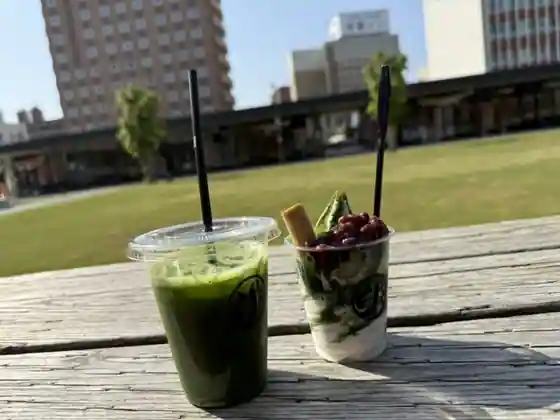
Chudo Genzo Chaho Chienamiki
塩荘 敦賀駅新幹線売店
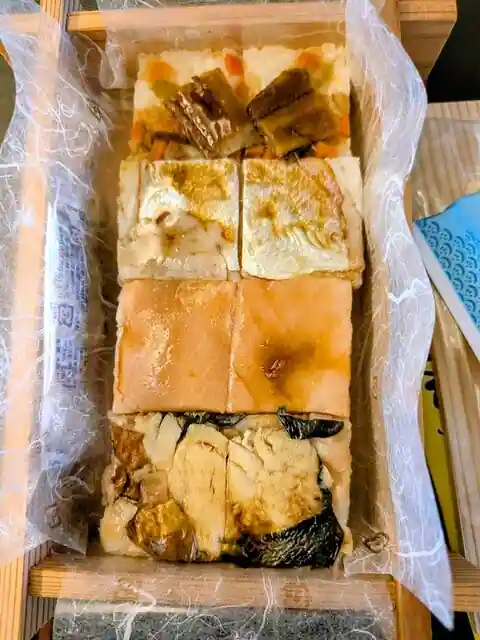
Shio So Tsuruga Eki Shinkansen Bai
敦賀ヨーロッパ軒 本店
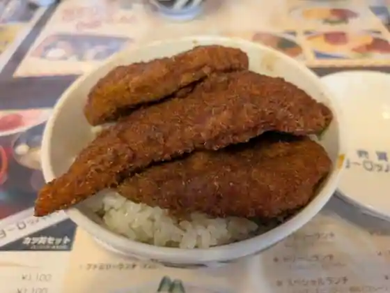
Tsuruga Yoroppa Ken Hon
魚とごはん ますよね
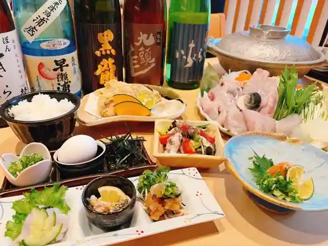
Sakana Togohan Masuyone
海食 うお貞
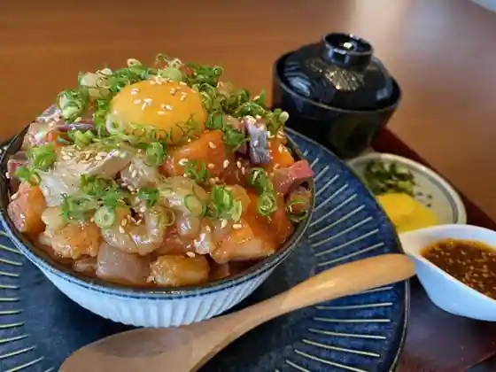
Kaishoku Uo Tei
カフェ茶屋 珈夢
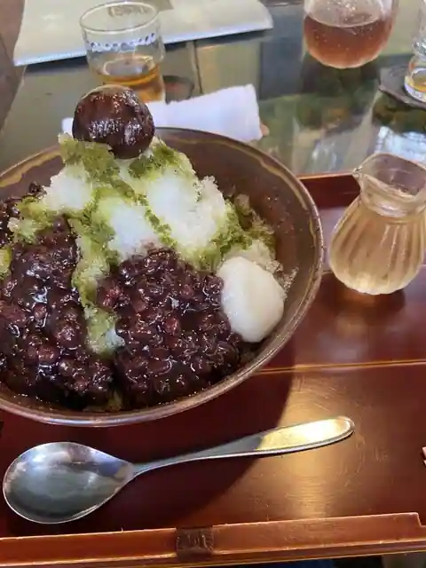
Cafe Chaya Ka Yume
かに喰亭ますよね
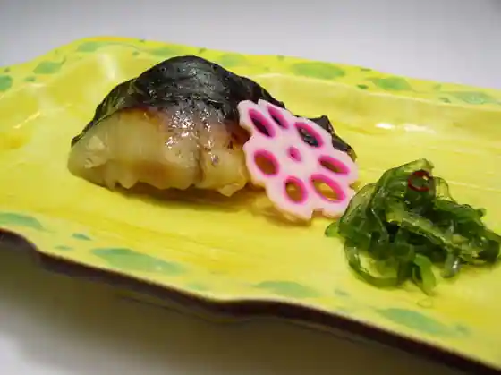
Kani Shoku Tei Masuyone
千成そば
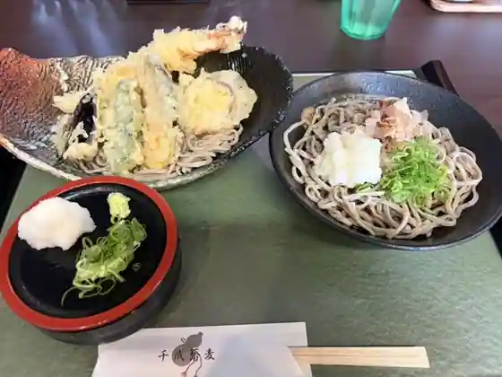
Sennari Soba
海鮮かに処甲羅亭
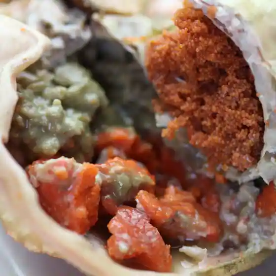
Kaisen Kani Tokoro Kora Tei
Sights
Kani Fakutorii Kora Kumi

Mizushima

Nihonkai Sakana Machi

Kingasaki Castle Ruins

Kehi no Matsubara
Tsuruga Aka Renga Soko
Kehi Shrine
Mariyama Kaiyu Park
Tsuruga Eki Koryu Shisetsu Oru Park
Kehi no Matsubara Beach
Saifuku Tera
Nyusanpia Tsuruga
Tsuruga Tetsudo Museum (Kyu Tsuruga Minato Ekisha)
Matsubara Shrine
Kanezaki Miya
Mariyama Beach
Eigen Tera
Takeda Kounsai Honjin Ato (Shimbo Camp Office)
Nakaike Ken Shitchi (Nakaike Ken Nin to Nature no Fureai Village)
Tsuruga Shieasaikuru
Jindo no Minato Tsuruga Muzeumu
Shiraki Beach
Nishiura Coast
Hon Kachi Tera
Kiramekiminato Kan
Honmyo Tera
Seimei Shrine
Itsuhata Beach
Inoshishigaike
Tateishi Misaki Lighthouse
Tayui Beach
Takanori Tera
Nosaka Ikoi Forest
Ei Kaku Tera
Ike Kawauchi Marsh
Jogu Shrine
Raigo Tera
Shibata Shi Garden
Mito Resshi Memorial Museum (Kyu Nishin Kura)
TSURUGA POLT SQUARE (otta)
Nago Beach
Shimbo Yado Ki no Me Kodo
Takeda Kounsai Nado Haka
Minatotsuruga Dashi Hall
Suzaki no Taka Toro
Tsuruga Ritsu Museum
Hiki Dan Castle Ruins
Tsuruga Eki Norikae Konkosu Tourist Information
Chon Tera
Echizen Coast
Tsuruga Yakusho